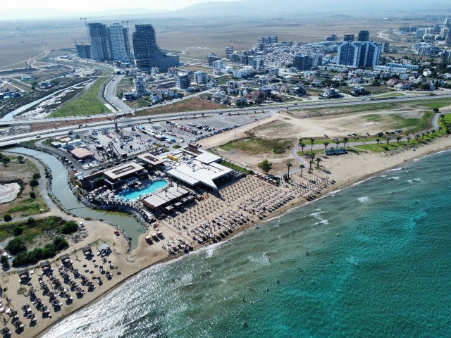
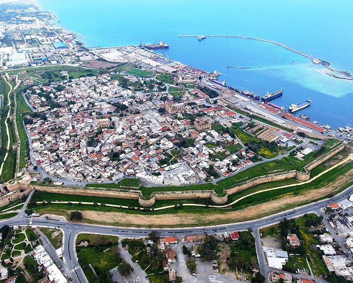
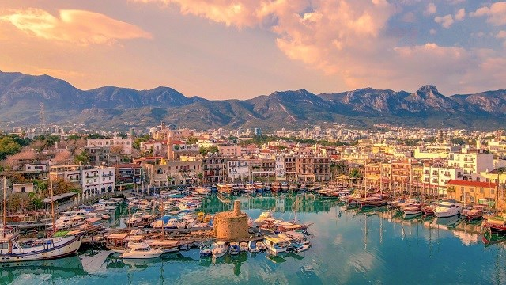

Yarköy
1974 Kıbrıs Harekâtı'na kadar Kıbrıslı Rumların yaşadığı Yarköy'e o tarihten sonra Denizliden göçmenler yerleştirildi. Köy, İskele'nin 6 km kuzeydoğusunda yer almaktadır. Nüfusu 2011 yılı itibarı ile 429'dur.

İskele
Eski adı Trikomo olan İskele ilçesi, 1998'de Mağusa'dan ayrılmıştır. Nüfusu 20245 olan ilçenin en büyük geçim kaynakları turizm ve balıkçılık.

Mağusa
Gazimağusa ya da Mağusa, Kıbrıs Adası'nda bir liman kentidir. Mağusa, Akdeniz'in en fazla güçlendirilmiş limanlarından biridir. Yakındoğu ile Avrupa arasında bir basamak oluşturur. Nüfusu 2011 yılı itibarı ile 40.920'dir.

Kıbrıs
Akdeniz'in mükemmel iklimi ve sıcak insanlarıyla ünlü Kuzey Kıbrıs, 3 kıtayı birleştiren en güzel adalardan biridir. Efsanede anlatıldığı gibi Sezar'ın Kleopatra'ya aşkını kanıtlamak için bu adayı vermesi en güzel örnektir.